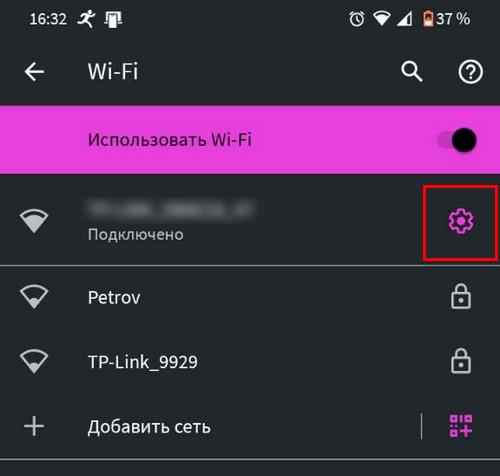
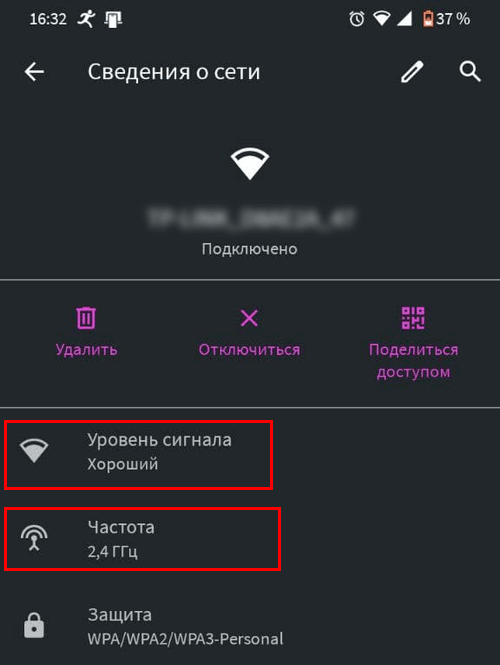
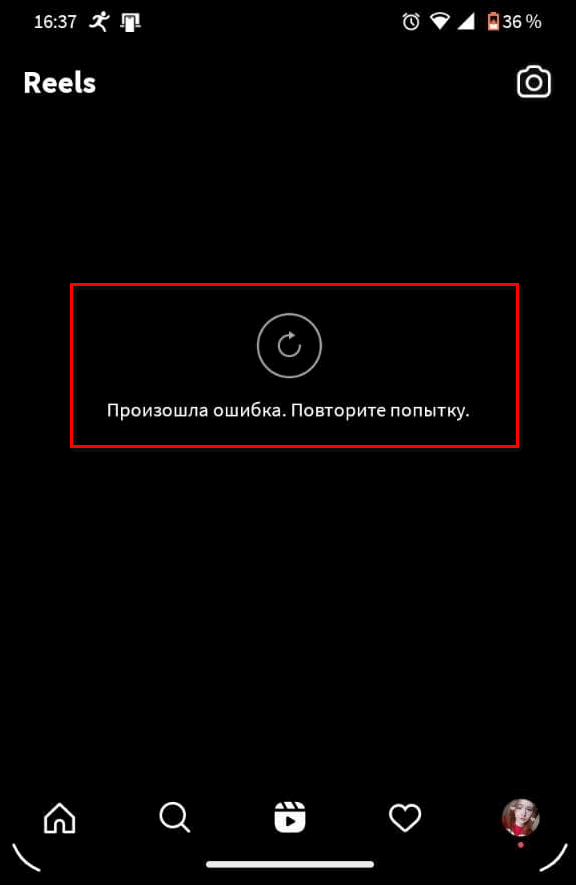

Неизвестная ошибка сети в Инстаграме: решение проблемы

Неизвестная ошибка сети при входе в Инстаграме* появляется, если произошел сбой в подключении, отсутствуют обновления приложения или проблемы в работе магазина контента.
Ошибка авторизации в Инстаграме*
Одна из первых ошибок, с которой может столкнуться пользователь – проблемы с авторизацией. Они возникают в случаях:
- пользователь неверно указать пароль. Его можно восстановить или проверить с помощью функции: «Автозаполнение»;
- «неизвестная ошибка сети». Проблема, которая возникает при отсутствии стабильного подключения к интернету, переключении между мобильной и домашней сетью;
- не загружается фото или видео;
- проблемы с работой раздела Reels или Историй.
Если пользователь забыл пароль, то может восстановить с помощью прикрепленного адреса электронной почты или номера телефона. Но предварительно на странице должны быть подтверждены учетные данные.
Есть отдельные проблемы, которые касаются распространения версий по геолокации. Например, региональное распространение версии с Reels и музыкальным стикером. Пользователям из Украины, Казахстана, Крыма – эта функция недоступна. Но есть способ, как её подключить: использовать модификации и подключение к другому гео.
Не загружается страница
Если Инстаграм* выдает ошибку при входе или загрузке страницы – вероятны проблемы при подключении к сети. Чтобы проверить, пользователь может перейти к настройкам подключения на мобильном устройстве или воспользоваться сторонними приложениями, как SpeedTest. Проверить на смартфоне:
- Зайти в «Настройки» - Подключения.
- Wi-Fi – нажать рядом с подключенным каналом по значку в виде «шестеренки».

Уровень сигнала, частота – Дополнительно.
- Скорость передачи данных.
Если устройство показывает, что сеть доступна и работает с обычном режиме, можно воспользоваться онлайн-сервисами:
- SpeedTest. Сервис, который показывает реальную нагруженность сети, скорость передачи и получения;
- Downdetector. Текущие проблемы, которые возникли у пользователей в социальной сети.
Иногда у Инстаграма* происходят технические работы. В этом случае приложение и мобильная версия не загружаются либо в определенном регионе, либо в общем у пользователей.
Интересный факт: в ноябре 2021 года Инстаграм* вместе с Facebook*, WhatsApp не работал на протяжении 8 часов. Ошибка была связана с работой серверов и ребрендингом компании на Meta.
Возникла проблема: Истории и Reels
Ошибки в работе этих разделов связаны с региональными особенностями, проблемами подключения и обновлений. Причиной может стать даже неисправная работа Play Market, где установлена автоматическая установка новых версий. Определить категорию проблемы самостоятельно:
- Зайти в Инстаграм* – нажать снизу по кнопке: «Reels».
- Если появилось: «Извините, возникла ошибка» - значит раздел недоступен по региону.

- Если публикации просто не прогружаются – проверить скорость работы сети.
- Если выбрасывает из раздела – проверить текущие обновления в Play Market.
Одна из проблем в магазине контента, которая выдает неизвестную ошибку сети – постоянная загрузка, останавливается на 56% и не устанавливает обновления. Она связана с некорректной установкой версии Play Market.
Чтобы избавиться от нее, нужно перейти к настройкам устройства и в пункте: «Приложения» найти магазин контента. С помощью дополнительного меню удалить последнее обновление и подождать, пока оно будет установлено заново.
Не загружаются фото в Инстаграме*
Проблема с загрузкой фото или видео возникает, если у владельца устройства недостаточно свободной памяти. Или же, нужно переустановить Инстаграм* и попробовать новую версию. Как решить ошибку:
- Зайти в «Настройки» смартфона – выбрать: «Память».
- Приложения – удалить кэш из тех, которые занимают наибольшее пространство.
При передаче данных (чем и является загрузка фото и видео) также задействуется память устройства. И чтобы отправить определенный пакет информации, приложение занимает нужный объем памяти.
Если проблема не решилась: зайти в Play Market или AppStore, удалить уже установленную версию Инстаграма*. Перезапустить смартфон и установить заново. При загрузке материалов стоит обратить внимание на их объем: видео – не более 3 Гб, фото – не более 500 Мб. Если контент превышает допустимое, то нужно использовать сервисы для сжатия: TinyPanda, imagecompressor или другие.
Ошибка сети: что делать
Если Инстаграм* выдает ошибку при входе в приложение, значит проблема в работе подключения к интернету. Один из вариантов, как ускорить работу – одновременно включить мобильные данные и Wi-Fi. Распространенные причины «Ошибки сети»:
- устаревшее программное обеспечение;
- новая версия Инстаграма* не была установлена;
- влияет на скорость подключения;
- нужно обновить приложение.
Это стандартные причины, почему появляется «Ошибка сети. Но есть и другие, которые связаны с отсутствием свободных мегабайт, если используется мобильное подключение. В этом случае пользователю нужно переключиться на другой тип соединения. Помогает перезагрузка устройства, а если ошибка продолжает появляться – воспользоваться полным сбросом устройства. Но в таком случае будут удалены учетные данные пользователя.